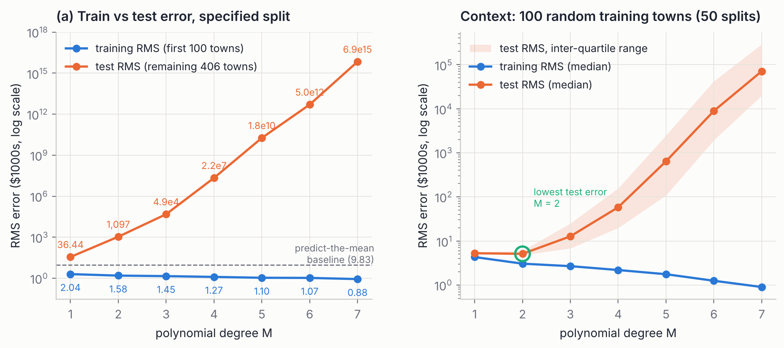
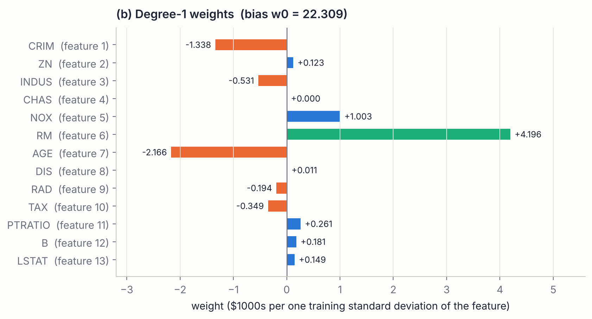
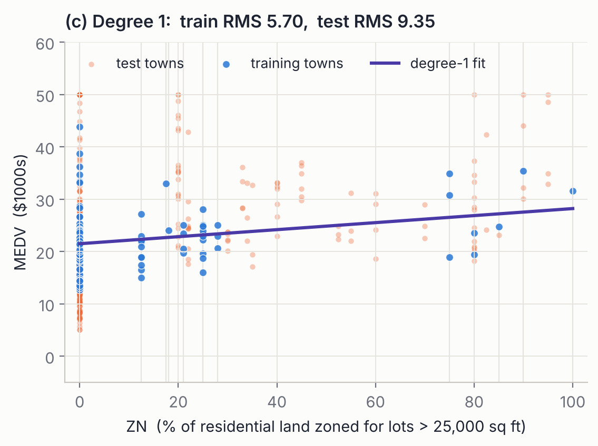
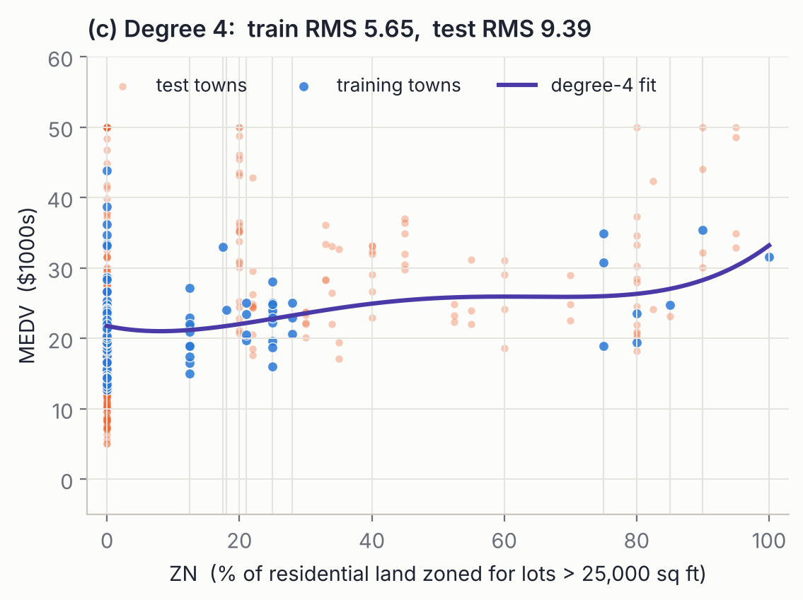
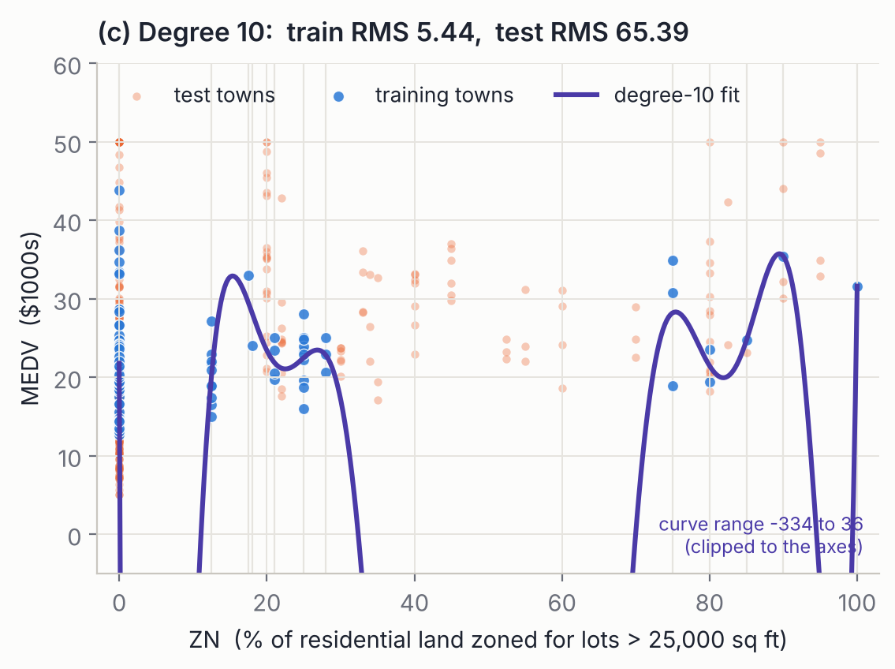
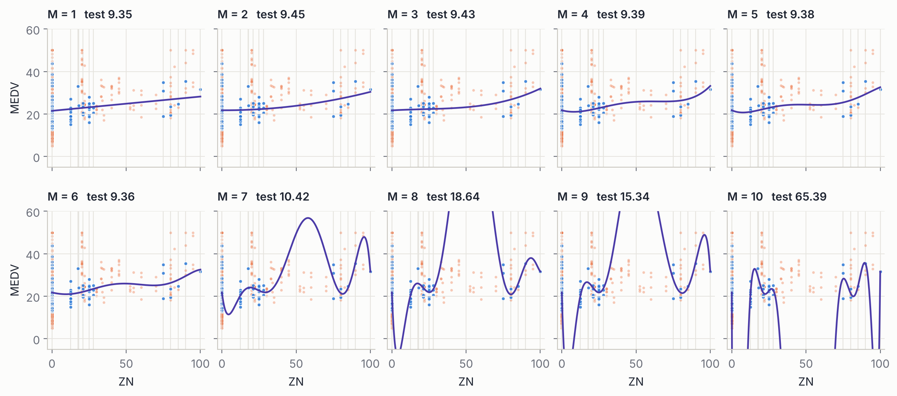
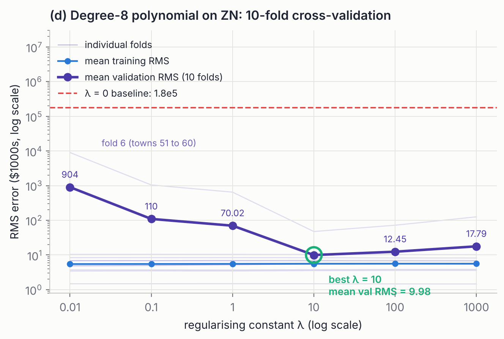
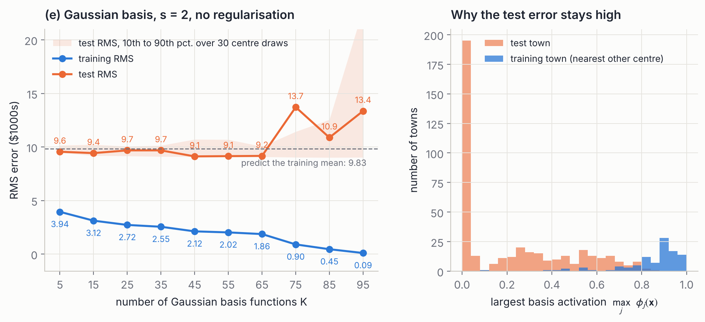
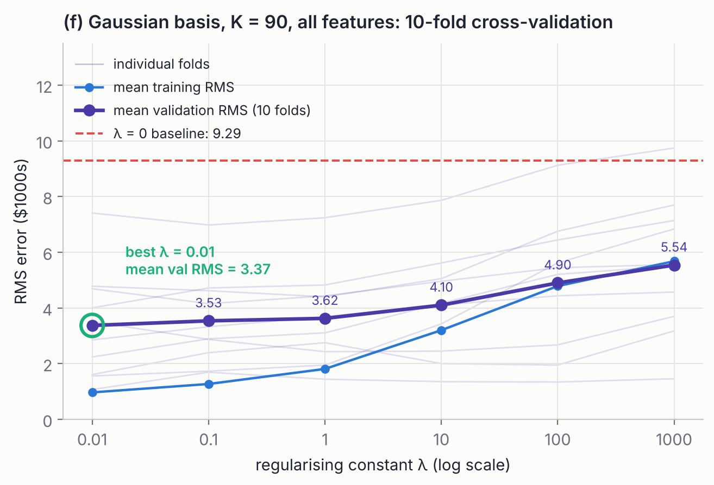

Data, model and solver
Both parts fit a model that is linear in its weights, \(y(\mathbf x, \mathbf w) = \mathbf w^\top \boldsymbol\phi(\mathbf x)\). Only the basis \(\boldsymbol\phi\) and the penalty change from question to question, so one solver serves all six parts.
0.1Data and train/test split
The Boston Housing data has 506 towns, 13 input features and the target MEDV, the median value of owner-occupied homes in $1000s. As the handout specifies, the first 100 rows are the training set and the remaining 406 are the test set.
| # | feature | meaning | # | feature | meaning |
|---|---|---|---|---|---|
| 1 | CRIM | per-capita crime rate | 8 | DIS | weighted distance to 5 employment centres |
| 2 | ZN | % residential land zoned for lots > 25,000 sq ft | 9 | RAD | index of access to radial highways |
| 3 | INDUS | % non-retail business acres | 10 | TAX | property-tax rate per $10,000 |
| 4 | CHAS | Charles River dummy (1 = bounds river) | 11 | PTRATIO | pupil-teacher ratio |
| 5 | NOX | nitric oxides concentration (pp 10M) | 12 | B | 1000(Bk − 0.63)² |
| 6 | RM | average rooms per dwelling | 13 | LSTAT | % lower-status population |
| 7 | AGE | % owner-occupied units built before 1940 |
Normalisation. Every feature is z-scored with the mean and standard deviation of the training rows only, \(z_d = (x_d - \bar x_d)/s_d\), so no information from the test set enters the model. The same transform is then applied to the test rows. Inside cross-validation it is recomputed from each fold's training rows. CHAS is 0 for all of the first 100 towns, so its standard deviation is 0; it is given \(s_d = 1\), which leaves a column of zeros that receives zero weight.
0.2Model and solver
Polynomial basis (no cross terms)
\[ \boldsymbol\phi(\mathbf z) = \big[1,\ z_1,\dots,z_D,\ z_1^2,\dots,z_D^2,\ \dots,\ z_1^M,\dots,z_D^M\big] \]
A degree-\(M\) model on \(D\) features has \(1 + DM\) weights: 14 for \(M=1\), up to 92 for \(M=7\).
Gaussian basis
\[ \phi_0 = 1,\qquad \phi_j(\mathbf z) = \exp\!\left(-\frac{\lVert \mathbf z - \boldsymbol\mu_j\rVert^2}{2s^2}\right),\ j = 1..K \]
Centres \(\boldsymbol\mu_j\) are training points picked by a random permutation (seed 572). The width is \(s = 2\) in normalised units (see part e).
With design matrix \(\boldsymbol\Phi\) (one row per town), the regularised sum-of-squares error and its minimiser are
\[ E(\mathbf w) = \tfrac12\sum_{n=1}^{N} \big(t_n - \mathbf w^\top\boldsymbol\phi(\mathbf x_n)\big)^2 + \tfrac{\lambda}{2}\lVert\mathbf w\rVert^2 \quad\Longrightarrow\quad \mathbf w^* = \big(\lambda \mathbf I' + \boldsymbol\Phi^\top\boldsymbol\Phi\big)^{-1}\boldsymbol\Phi^\top\mathbf t , \]
where \(\mathbf I'\) is the identity with a 0 in the bias position, so the bias is not shrunk. For \(\lambda = 0\) the normal equations are often singular (the constant CHAS column; RAD has only 6 distinct training values, so \(\text{RAD}^6\) is a combination of lower powers; ZN has only 12). I therefore use the pseudo-inverse \(\mathbf w^* = \boldsymbol\Phi^{+}\mathbf t\), which gives the minimum-norm least-squares solution (singular values below \(10^{-10}\sigma_{\max}\) are treated as zero). All errors are RMS, \(E_{\text{RMS}} = \sqrt{\tfrac1N\sum_n (y_n - t_n)^2}\), in $1000s.
Polynomial basis functions
Monomials of each single feature, with no cross terms, fitted by least squares on the first 100 towns.
(a)Training and test error for degree 1 to 7

| degree M | weights | rank of Φ | train RMS | test RMS | random split: train (median) | random split: test (median) |
|---|---|---|---|---|---|---|
| 1 | 14 | 13 | 2.037 | 36.44 | 4.31 | 5.26 |
| 2 | 27 | 25 | 1.578 | 1,097 | 3.05 | 5.10 |
| 3 | 40 | 37 | 1.449 | 4.9 × 104 | 2.68 | 12.70 |
| 4 | 53 | 48 | 1.270 | 2.2 × 107 | 2.19 | 58.07 |
| 5 | 66 | 54 | 1.097 | 1.8 × 1010 | 1.76 | 640 |
| 6 | 79 | 60 | 1.073 | 5.0 × 1012 | 1.25 | 8,889 |
| 7 | 92 | 66 | 0.881 | 6.9 × 1015 | 0.90 | 7.1 × 104 |
- Training error falls every time the degree rises (2.04 → 0.88). The degree-\(M\) basis contains the degree-\((M-1)\) basis, so least squares can never do worse on the data it was fitted to.
- Test error rises by orders of magnitude, from 36.4 at \(M=1\) to about \(7\times10^{15}\) at \(M=7\). Even the linear model is worse than predicting the training mean (9.83). This is overfitting made far worse by extrapolation. The test towns sit far outside the training range (CRIM up to 229 σ), so a term \(w\,z^M\) fitted on training values with \(|z|\) of a few units is evaluated at \(|z| \approx 229\). With \(M = 7\) that term is multiplied by about \(10^{16}\).
- With 100 training points and up to 92 weights (rank 66), the high-degree models have almost as many free parameters as data points. They fit the noise in the training set, and the coefficients that do this take extreme values outside the training range.
- The right panel isolates the overfitting effect. When the training towns are drawn at random, the test error has the textbook shape: it is lowest at \(M = 2\) (5.10, slightly better than 5.26 for \(M=1\)) and then grows as the model starts to fit noise. So with representative data a mild quadratic term helps; with this split no polynomial generalises.
polynomial_regression: parts (a) and (b)
def polynomial_regression(degrees=range(1, 8), features=None):
"""
Fit an unregularised polynomial of each degree on the first 100 towns
and report training and test RMS error.
`features` selects columns (default: all 13).
Returns a dict with the degrees, the two error curves and the weights.
"""
X_tr, t_tr, X_te, t_te = train_test_split()
if features is not None:
X_tr, X_te = X_tr[:, features], X_te[:, features]
Z_tr, Z_te, mu, sd = normalize(X_tr, X_te)
out = {"degree": [], "train_rms": [], "test_rms": [], "weights": {}}
for M in degrees:
Phi_tr = design_polynomial(Z_tr, M)
Phi_te = design_polynomial(Z_te, M)
w = fit_least_squares(Phi_tr, t_tr)
out["degree"].append(M)
out["train_rms"].append(rms(Phi_tr, w, t_tr))
out["test_rms"].append(rms(Phi_te, w, t_te))
out["weights"][M] = w
out["mu"], out["sd"] = mu, sd
return out(b)Learned weights of the degree-1 model
The degree-1 model is \(y = w_0 + \sum_{d=1}^{13} w_d z_d\) with z-scored inputs, so each \(w_d\) is the change in MEDV ($1000s) when feature \(d\) increases by one training standard deviation, with all other features held fixed. Dividing by \(s_d\) converts it back to raw units.

| weight | feature | w (normalised) | w / sd (per raw unit) | corr. with MEDV (train) | w if fitted on all 506 towns |
|---|---|---|---|---|---|
| w0 | bias | 22.3090 | n/a | n/a | n/a |
| w1 | 1 · CRIM | −1.3380 | −3.4559 | −0.57 | −0.928 |
| w2 | 2 · ZN | +0.1230 | +0.0054 | +0.26 | +1.082 |
| w3 | 3 · INDUS | −0.5311 | −0.1688 | −0.46 | +0.141 |
| w4 | 4 · CHAS | +0.0000 | +0.0000 | n/a (constant) | +0.682 |
| w5 | 5 · NOX | +1.0027 | +21.5154 | −0.48 | −2.057 |
| w6 | 6 · RM | +4.1956 | +8.5910 | +0.85 | +2.674 |
| w7 | 7 · AGE | −2.1663 | −0.0792 | −0.48 | +0.019 |
| w8 | 8 · DIS | +0.0107 | +0.0076 | +0.16 | −3.104 |
| w9 | 9 · RAD | −0.1938 | −0.1399 | −0.30 | +2.662 |
| w10 | 10 · TAX | −0.3486 | −0.0076 | −0.37 | −2.077 |
| w11 | 11 · PTRATIO | +0.2613 | +0.1546 | −0.35 | −2.061 |
| w12 | 12 · B | +0.1811 | +0.0066 | +0.35 | +0.849 |
| w13 | 13 · LSTAT | +0.1488 | +0.0262 | −0.74 | −3.744 |
Indexing: with the bias as \(w_0\), the 6th feature (RM) has weight \(w_6\) and the 8th (DIS) has \(w_8\). Counting the features from 0, as the handout does when it calls the RM weight \(w_5\), these are the "5th" and "7th" features; both readings refer to RM and DIS.
- RM: yes. It is the largest weight in the model and is positive. Larger dwellings are worth more, and RM is the feature most strongly correlated with MEDV in the training towns (r = +0.85). About $8,600 per extra room (in 1970s dollars, with a training mean of $22,300) is a plausible size. On all 506 towns the same model gives +2.67 per s.d., so the sign and magnitude agree.
- DIS: plausible in magnitude, but it should not be read as "distance does not matter". On its own DIS is only weakly related to price in the training towns (r = +0.16). It is also correlated with NOX (r = −0.48), INDUS and AGE: towns near the employment centres are older, more industrial and more polluted. Once those features are in the model, DIS adds almost nothing, so least squares gives it about zero weight. When the model is fitted on all 506 towns, which include the inner-city tracts, DIS gets a clearly negative weight (−3.10). Holding pollution, age and the other features fixed, a longer commute lowers value. The first 100 suburbs simply do not contain enough variation in DIS to estimate this effect.
- Other weights show the same limitation. NOX (+1.00), PTRATIO (+0.26) and LSTAT (+0.15) have the opposite sign to their correlation with MEDV. With 100 strongly correlated samples, individual weights are poorly determined, even though the overall fit is good (training RMS 2.04). CHAS gets exactly 0 because it never varies in the training set.
(c)Polynomial regression on one feature (ZN)
The handout asks for feature \(X_n(:,2)\). In 1-based (MATLAB) indexing this is the 2nd column, ZN, the share of residential land zoned for large lots. ZN is normalised with the training mean and standard deviation (12.39 and 22.85), the polynomial is fitted in normalised units, and the curve is drawn against raw ZN. ZN is unusual: 63% of the training towns have ZN = 0, and the training set has only 12 distinct values (thin vertical lines), with a gap between 28 and 75.




| degree | train RMS | test RMS | range of the fitted curve on [0, 100] |
|---|---|---|---|
| 1 | 5.695 | 9.35 | 21.5 to 28.2 |
| 2 | 5.670 | 9.45 | 21.7 to 30.4 |
| 3 | 5.665 | 9.43 | 21.7 to 32.0 |
| 4 | 5.651 | 9.39 | 21.0 to 33.2 |
| 5 | 5.648 | 9.38 | 20.7 to 32.6 |
| 6 | 5.647 | 9.36 | 21.0 to 32.5 |
| 7 | 5.501 | 10.42 | 11.4 to 56.8 |
| 8 | 5.477 | 18.64 | −8.1 to 115.2 |
| 9 | 5.473 | 15.34 | −19.1 to 92.1 |
| 10 | 5.437 | 65.39 | −334.2 to 35.7 |
- ZN on its own predicts little. Even the best fit only reduces the training RMS from 5.90 (the training standard deviation) to about 5.4. Most of the spread is vertical: 63 training towns share ZN = 0 but their prices range from 13 to 44. No function of ZN can separate them. The lowest possible training RMS (a curve through the mean of each of the 12 ZN groups) is 5.41, and degree 10 already reaches 5.44.
- Low orders are stable. Degrees 1 to 6 give test RMS 9.35 to 9.45, essentially the mean-prediction baseline. The trend is real but weak.
- High orders overfit in the gaps. Once the number of weights approaches the number of distinct ZN values, the polynomial is pinned at the 12 training values and free everywhere else. Between 30 and 75, where there are no training towns but many test towns (ZN = 30, 33, 34, 35, 40, 45, 52.5, 55, 60, 70), it swings far outside the range of house prices. This is why the test error rises to 18.6 (degree 8) and 65.4 (degree 10) while the training error barely changes.
polynomial_regression_1d_vis: part (c)
def polynomial_regression_1d_vis(degree, feature=1, n_grid=400):
"""
Polynomial regression on ONE feature (default column 2 = ZN, i.e.
Xn(:,2) in 1-based indexing). Returns everything needed to plot the
training points, the test points and the learned curve, in the
original (un-normalised) units on the x-axis.
"""
X, t = load_data()
x = X[:, feature:feature + 1]
x_tr, x_te, t_tr, t_te = x[:N_TRAIN], x[N_TRAIN:], t[:N_TRAIN], t[N_TRAIN:]
z_tr, z_te, mu, sd = normalize(x_tr, x_te)
w = fit_least_squares(design_polynomial(z_tr, degree), t_tr)
grid = np.linspace(x.min(), x.max(), n_grid)[:, None]
curve = design_polynomial((grid - mu) / sd, degree) @ w
return {
"degree": degree, "feature": FEATURES[feature], "w": w,
"x_train": x_tr.ravel(), "t_train": t_tr,
"x_test": x_te.ravel(), "t_test": t_te,
"grid": grid.ravel(), "curve": curve,
"train_rms": rms(design_polynomial(z_tr, degree), w, t_tr),
"test_rms": rms(design_polynomial(z_te, degree), w, t_te),
}(d)L2-regularised degree-8 polynomial, λ chosen by 10-fold cross-validation
A degree-8 polynomial on ZN (9 weights) is fitted with each \(\lambda \in \{0, 0.01, 0.1, 1, 10, 100, 1000\}\). The first 100 towns are split into 10 contiguous folds of 10. Each fold is held out once: the model is trained on the other 90 (normalised with their own statistics) and the RMS error on the held-out 10 is recorded. The 10 validation errors are then averaged.

| λ | mean train RMS (CV) | mean validation RMS (CV) | refit on 100: train RMS | refit on 100: test RMS |
|---|---|---|---|---|
| 0 | 5.429 | 1.8 × 105 | 5.477 | 18.64 |
| 0.01 | 5.488 | 904 | 5.528 | 9.83 |
| 0.1 | 5.516 | 110 | 5.556 | 10.02 |
| 1 | 5.550 | 70.02 | 5.587 | 9.45 |
| 10 | 5.598 | 9.98 | 5.641 | 9.35 |
| 100 | 5.618 | 12.45 | 5.664 | 9.48 |
| 1000 | 5.624 | 17.79 | 5.669 | 9.50 |
- I would choose λ = 10. It gives the lowest average validation error. Smaller λ lets the degree-8 curve oscillate; larger λ (100, 1000) flattens it too much and the error rises again (12.5, 17.8).
- One fold dominates the average. Fold 6 (towns 51 to 60) contains ZN = 75, 85, 90 and 100. With those towns removed, the remaining 90 training towns contain no ZN value above 80, so the held-out towns at 85 to 100 are pure extrapolation for the degree-8 polynomial. Its error there is 1.8 × 106 without regularisation and 47.6 at λ = 10. In the other nine folds the curves are much more similar (validation RMS 1.5 to 10.3 at λ = 10). Regularisation matters most where the data are sparse.
- The choice is confirmed on the test set. Refitting on all 100 towns, λ = 10 gives the lowest test RMS of the grid (9.35, against 18.64 unregularised). This matches the best low-order polynomial in part (c): the penalty lets a degree-8 model behave like a smooth, low-order one.
polynomial_regression_reg: part (d)
def polynomial_regression_reg(degree=8, feature=1, lambdas=LAMBDAS, k=10):
"""
L2-regularised degree-8 polynomial on the 2nd feature, first 100 towns.
10-fold cross-validation picks lambda. Normalisation is recomputed
inside every fold from that fold's training rows only.
"""
X, t = load_data()
x, tt = X[:N_TRAIN, feature:feature + 1], t[:N_TRAIN]
val_err = np.zeros((len(lambdas), k))
trn_err = np.zeros((len(lambdas), k))
for f, (trn, val) in enumerate(kfold_indices(N_TRAIN, k)):
z_trn, z_val, _, _ = normalize(x[trn], x[val])
P_trn = design_polynomial(z_trn, degree)
P_val = design_polynomial(z_val, degree)
for i, lam in enumerate(lambdas):
w = fit_ridge(P_trn, tt[trn], lam)
trn_err[i, f] = rms(P_trn, w, tt[trn])
val_err[i, f] = rms(P_val, w, tt[val])
mean_val = val_err.mean(axis=1)
best = lambdas[int(np.argmin(mean_val))]
return {"lambdas": list(lambdas), "val_err": val_err, "trn_err": trn_err,
"mean_val": mean_val, "mean_trn": trn_err.mean(axis=1), "best_lambda": best}Gaussian basis functions
Radial basis functions centred on randomly chosen training towns, using all 13 normalised features.
(e)Training and test error for K = 5, 15, …, 95 basis functions
A single random permutation of the 100 training towns is drawn, and the first \(K\) towns in it are used as centres, so the centre sets are nested as \(K\) grows. No regularisation is used. Width. The median distance between two normalised training towns is 4.62. With \(s = 2\), a centre at that typical distance gives an activation of \(e^{-4.62^2/8} \approx 0.07\). Each basis function therefore covers a neighbourhood of towns without every function overlapping all the others. Varying the width does not change the conclusions (\(s = 1\): test RMS 9.8 to 11.9; \(s = 4\): 8.0 to 9.7 for \(K \le 85\)).

| K | train RMS | test RMS | test RMS, median of 30 draws | test RMS, 10th to 90th pct. |
|---|---|---|---|---|
| 5 | 3.941 | 9.55 | 9.76 | 9.46 to 10.15 |
| 15 | 3.115 | 9.42 | 9.38 | 9.19 to 10.22 |
| 25 | 2.716 | 9.68 | 9.36 | 9.15 to 10.05 |
| 35 | 2.546 | 9.68 | 9.28 | 9.10 to 10.13 |
| 45 | 2.117 | 9.12 | 9.25 | 9.08 to 10.71 |
| 55 | 2.019 | 9.14 | 9.24 | 9.09 to 10.69 |
| 65 | 1.864 | 9.16 | 9.32 | 9.08 to 10.04 |
| 75 | 0.897 | 13.71 | 9.31 | 9.03 to 11.42 |
| 85 | 0.449 | 10.87 | 9.49 | 9.01 to 12.55 |
| 95 | 0.094 | 13.36 | 11.39 | 9.02 to 22.86 |
- Training error falls steadily from 3.94 (K = 5) to 0.09 (K = 95). With 96 weights for 100 points the model nearly interpolates the training set.
- Test error hardly moves: 9.1 to 9.7 for \(K \le 65\), close to the 9.83 of always predicting the training mean. Above that, this draw gets worse (13.7, 10.9, 13.4). Over 30 draws the median stays near 9.3 up to K = 85 and rises to 11.4 at K = 95, while the spread between draws widens sharply (the 90th percentile reaches 22.9 at K = 95). As K approaches the number of training points, the result depends heavily on which towns are chosen as centres. This is the overfitting regime.
- Why the test error is so flat. A Gaussian basis function decays to zero away from its centre. 42% of the test towns have activation below 0.01 for every centre (median best activation 0.056, against 0.89 for training towns). For those towns \(y \approx w_0\), so the model falls back to roughly the average price. Unlike the polynomial it cannot explode; it just has nothing to say about towns unlike the training suburbs. This is the same distribution-shift problem as in part (a), but it appears as a bounded error instead of an exploding one.
- For large K the remaining test towns that are near a centre get worse predictions, because the near-interpolating weights are large and alternate in sign, which is the usual sign of overfitting.
gaussian_regression: part (e)
def gaussian_regression(Ks=range(5, 100, 10), s=2.0, seed=572):
"""
Gaussian RBF regression on all 13 (normalised) features.
Centres: a random permutation of the 100 training points, then the
first K of that permutation (so the centre sets are nested in K).
No regularisation.
"""
X_tr, t_tr, X_te, t_te = train_test_split()
Z_tr, Z_te, _, _ = normalize(X_tr, X_te)
perm = np.random.default_rng(seed).permutation(N_TRAIN)
out = {"K": [], "train_rms": [], "test_rms": [], "s": s, "seed": seed}
for K in Ks:
C = Z_tr[perm[:K]]
Phi_tr = design_gaussian(Z_tr, C, s)
Phi_te = design_gaussian(Z_te, C, s)
w = fit_least_squares(Phi_tr, t_tr)
out["K"].append(K)
out["train_rms"].append(rms(Phi_tr, w, t_tr))
out["test_rms"].append(rms(Phi_te, w, t_te))
return out(f)L2-regularised Gaussian regression (K = 90), λ chosen by 10-fold cross-validation
All 13 features, \(K = 90\) basis functions and \(s = 2\). The same 10 contiguous folds are used. Each fold has exactly 90 training towns, so the 90 centres are those training towns in random order. The held-out towns are never centres.

| λ | mean train RMS (CV) | mean validation RMS (CV) | refit on 100: train RMS | refit on 100: test RMS |
|---|---|---|---|---|
| 0 | 0.000 | 9.29 | 0.307 | 11.64 |
| 0.01 | 0.965 | 3.37 | 1.077 | 10.54 |
| 0.1 | 1.268 | 3.53 | 1.350 | 9.90 |
| 1 | 1.808 | 3.62 | 1.896 | 9.46 |
| 10 | 3.198 | 4.10 | 3.199 | 9.51 |
| 100 | 4.783 | 4.90 | 4.772 | 9.68 |
| 1000 | 5.676 | 5.54 | 5.693 | 9.81 |
- I would choose λ = 0.01. Without regularisation the model has 91 weights for 90 training towns and interpolates them exactly (training RMS 0.00). The validation error is then 9.29, no better than guessing the mean. A small penalty, λ = 0.01, cuts the validation error to 3.37.
- From λ = 0.01 upward the validation error rises steadily (3.53, 3.62, 4.10, 4.90, 5.54) while the training error rises to meet it. At λ = 1000 the two curves meet and the model underfits. The validation curve is fairly flat between 0.01 and 1, so any λ in that range is a reasonable choice. 0.01 is the minimiser on this grid.
- Cross-validation measures in-distribution error. Inside the first 100 towns, held-out suburbs are close to the training suburbs, so the regularised Gaussian model predicts them well (about $3,400 RMS, far better than any polynomial in Part 1). On the 406 test towns the same model scores 10.5, and the best λ on the test set would be λ = 1 (9.46). Cross-validation assumes the validation and test data come from the same distribution. That assumption does not hold for this split.
gaussian_regression_reg: part (f)
def gaussian_regression_reg(K=90, s=2.0, lambdas=LAMBDAS, k=10, seed=572):
"""
L2-regularised Gaussian RBF regression, all features, first 100 towns,
K = 90 basis functions, lambda chosen by 10-fold cross-validation.
In each fold the K centres are a random permutation of that fold's
training rows (a fold has exactly 90 training rows, so every one of
them becomes a centre) and the validation rows are never used as centres.
"""
X, t = load_data()
Xa, ta = X[:N_TRAIN], t[:N_TRAIN]
rng = np.random.default_rng(seed)
val_err = np.zeros((len(lambdas), k))
trn_err = np.zeros((len(lambdas), k))
for f, (trn, val) in enumerate(kfold_indices(N_TRAIN, k)):
Z_trn, Z_val, _, _ = normalize(Xa[trn], Xa[val])
C = Z_trn[rng.permutation(len(trn))[:K]]
P_trn = design_gaussian(Z_trn, C, s)
P_val = design_gaussian(Z_val, C, s)
for i, lam in enumerate(lambdas):
w = fit_ridge(P_trn, ta[trn], lam)
trn_err[i, f] = rms(P_trn, w, ta[trn])
val_err[i, f] = rms(P_val, w, ta[val])
mean_val = val_err.mean(axis=1)
best = lambdas[int(np.argmin(mean_val))]
return {"lambdas": list(lambdas), "val_err": val_err, "trn_err": trn_err,
"mean_val": mean_val, "mean_trn": trn_err.mean(axis=1), "best_lambda": best}Python code
Two files. regression.py contains the data handling, the two bases, the solvers and the five functions the handout asks for.
make_figures.py runs every experiment, draws every figure on this page and writes results.json.
Run python3 make_figures.py with housing.data in the same folder. Source files:
regression.py · make_figures.py · results.json.
regression.py: complete module
"""
SYDE 572 - Assignment 2
Linear basis function regression on the Boston Housing data.
Every model here is linear in its weights, y(x, w) = w^T phi(x),
so the only thing that changes between parts is the basis phi:
polynomial : phi(x) = [1, x_1, ..., x_D, x_1^2, ..., x_D^2, ..., x_D^M]
gaussian : phi(x) = [1, exp(-||x - mu_j||^2 / (2 s^2)) for j = 1..K]
and whether an L2 penalty (lambda / 2) ||w||^2 is added to the
sum-of-squares error.
Functions required by the handout (Python names use underscores):
polynomial_regression part (a), (b)
polynomial_regression_1d_vis part (c)
polynomial_regression_reg part (d)
gaussian_regression part (e)
gaussian_regression_reg part (f)
"""
import os
import numpy as np
HERE = os.path.dirname(os.path.abspath(__file__))
DATA_FILE = os.path.join(HERE, "housing.data")
FEATURES = ["CRIM", "ZN", "INDUS", "CHAS", "NOX", "RM", "AGE",
"DIS", "RAD", "TAX", "PTRATIO", "B", "LSTAT"]
N_TRAIN = 100
LAMBDAS = [0, 0.01, 0.1, 1, 10, 100, 1000]
RCOND = 1e-10 # singular values below RCOND * s_max are treated as zero
# ------------------------------------------------------------------ data ----
def load_data(path=DATA_FILE):
"""Return X (506 x 13 features) and t (506 median values, in $1000s)."""
data = np.loadtxt(path)
return data[:, :13], data[:, 13]
def normalize(X_train, X_other=None):
"""
Z-score each feature with the mean and standard deviation of the
TRAINING points only, so nothing about the test set leaks into the model.
A feature that is constant in the training set (CHAS is 0 for all of the
first 100 towns) gets sd = 1 so we never divide by zero.
"""
mu = X_train.mean(axis=0)
sd = X_train.std(axis=0)
sd = np.where(sd == 0, 1.0, sd)
Z_train = (X_train - mu) / sd
if X_other is None:
return Z_train, mu, sd
return Z_train, (X_other - mu) / sd, mu, sd
def train_test_split(n_train=N_TRAIN):
"""First n_train rows are training data, the rest are test data."""
X, t = load_data()
return X[:n_train], t[:n_train], X[n_train:], t[n_train:]
# ---------------------------------------------------------------- bases ----
def design_polynomial(Z, degree):
"""
Monomials of each single variable, no cross terms:
[1 | Z | Z^2 | ... | Z^degree]
For D features the matrix has 1 + D * degree columns.
"""
cols = [np.ones((Z.shape[0], 1))]
for k in range(1, degree + 1):
cols.append(Z ** k)
return np.hstack(cols)
def design_gaussian(Z, centres, s):
"""[1 | exp(-||z - mu_j||^2 / (2 s^2))] for every centre mu_j."""
sq = ((Z[:, None, :] - centres[None, :, :]) ** 2).sum(axis=2)
return np.hstack([np.ones((Z.shape[0], 1)), np.exp(-sq / (2.0 * s * s))])
# --------------------------------------------------------------- solvers ----
def fit_least_squares(Phi, t):
"""
Unregularised solution w = Phi^+ t (Moore-Penrose pseudo-inverse).
When Phi^T Phi is singular (e.g. a constant column, or a feature with
fewer distinct values than the degree) this returns the minimum-norm
weight vector instead of failing.
"""
return np.linalg.pinv(Phi, rcond=RCOND) @ t
def fit_ridge(Phi, t, lam):
"""
Minimise 1/2 sum (t_n - w^T phi_n)^2 + lam/2 ||w||^2.
Setting the gradient to zero gives (lam I' + Phi^T Phi) w = Phi^T t.
I' is the identity with a 0 in the bias position, so the bias is not
shrunk towards zero (shrinking it would only pull every prediction
towards 0 instead of towards the mean house price).
"""
if lam == 0:
return fit_least_squares(Phi, t)
reg = lam * np.eye(Phi.shape[1])
reg[0, 0] = 0.0
return np.linalg.solve(reg + Phi.T @ Phi, Phi.T @ t)
def rms(Phi, w, t):
"""Root-mean-square error sqrt( 1/N sum (y_n - t_n)^2 )."""
return float(np.sqrt(np.mean((Phi @ w - t) ** 2)))
def kfold_indices(n, k=10):
"""Contiguous folds: fold i validates on rows [i*n/k, (i+1)*n/k)."""
edges = np.linspace(0, n, k + 1).astype(int)
for i in range(k):
val = np.arange(edges[i], edges[i + 1])
trn = np.setdiff1d(np.arange(n), val)
yield trn, val
# ============================================================ part (a) ====
def polynomial_regression(degrees=range(1, 8), features=None):
"""
Fit an unregularised polynomial of each degree on the first 100 towns
and report training and test RMS error.
`features` selects columns (default: all 13).
Returns a dict with the degrees, the two error curves and the weights.
"""
X_tr, t_tr, X_te, t_te = train_test_split()
if features is not None:
X_tr, X_te = X_tr[:, features], X_te[:, features]
Z_tr, Z_te, mu, sd = normalize(X_tr, X_te)
out = {"degree": [], "train_rms": [], "test_rms": [], "weights": {}}
for M in degrees:
Phi_tr = design_polynomial(Z_tr, M)
Phi_te = design_polynomial(Z_te, M)
w = fit_least_squares(Phi_tr, t_tr)
out["degree"].append(M)
out["train_rms"].append(rms(Phi_tr, w, t_tr))
out["test_rms"].append(rms(Phi_te, w, t_te))
out["weights"][M] = w
out["mu"], out["sd"] = mu, sd
return out
# ============================================================ part (c) ====
def polynomial_regression_1d_vis(degree, feature=1, n_grid=400):
"""
Polynomial regression on ONE feature (default column 2 = ZN, i.e.
Xn(:,2) in 1-based indexing). Returns everything needed to plot the
training points, the test points and the learned curve, in the
original (un-normalised) units on the x-axis.
"""
X, t = load_data()
x = X[:, feature:feature + 1]
x_tr, x_te, t_tr, t_te = x[:N_TRAIN], x[N_TRAIN:], t[:N_TRAIN], t[N_TRAIN:]
z_tr, z_te, mu, sd = normalize(x_tr, x_te)
w = fit_least_squares(design_polynomial(z_tr, degree), t_tr)
grid = np.linspace(x.min(), x.max(), n_grid)[:, None]
curve = design_polynomial((grid - mu) / sd, degree) @ w
return {
"degree": degree, "feature": FEATURES[feature], "w": w,
"x_train": x_tr.ravel(), "t_train": t_tr,
"x_test": x_te.ravel(), "t_test": t_te,
"grid": grid.ravel(), "curve": curve,
"train_rms": rms(design_polynomial(z_tr, degree), w, t_tr),
"test_rms": rms(design_polynomial(z_te, degree), w, t_te),
}
# ============================================================ part (d) ====
def polynomial_regression_reg(degree=8, feature=1, lambdas=LAMBDAS, k=10):
"""
L2-regularised degree-8 polynomial on the 2nd feature, first 100 towns.
10-fold cross-validation picks lambda. Normalisation is recomputed
inside every fold from that fold's training rows only.
"""
X, t = load_data()
x, tt = X[:N_TRAIN, feature:feature + 1], t[:N_TRAIN]
val_err = np.zeros((len(lambdas), k))
trn_err = np.zeros((len(lambdas), k))
for f, (trn, val) in enumerate(kfold_indices(N_TRAIN, k)):
z_trn, z_val, _, _ = normalize(x[trn], x[val])
P_trn = design_polynomial(z_trn, degree)
P_val = design_polynomial(z_val, degree)
for i, lam in enumerate(lambdas):
w = fit_ridge(P_trn, tt[trn], lam)
trn_err[i, f] = rms(P_trn, w, tt[trn])
val_err[i, f] = rms(P_val, w, tt[val])
mean_val = val_err.mean(axis=1)
best = lambdas[int(np.argmin(mean_val))]
return {"lambdas": list(lambdas), "val_err": val_err, "trn_err": trn_err,
"mean_val": mean_val, "mean_trn": trn_err.mean(axis=1), "best_lambda": best}
# ============================================================ part (e) ====
def gaussian_regression(Ks=range(5, 100, 10), s=2.0, seed=572):
"""
Gaussian RBF regression on all 13 (normalised) features.
Centres: a random permutation of the 100 training points, then the
first K of that permutation (so the centre sets are nested in K).
No regularisation.
"""
X_tr, t_tr, X_te, t_te = train_test_split()
Z_tr, Z_te, _, _ = normalize(X_tr, X_te)
perm = np.random.default_rng(seed).permutation(N_TRAIN)
out = {"K": [], "train_rms": [], "test_rms": [], "s": s, "seed": seed}
for K in Ks:
C = Z_tr[perm[:K]]
Phi_tr = design_gaussian(Z_tr, C, s)
Phi_te = design_gaussian(Z_te, C, s)
w = fit_least_squares(Phi_tr, t_tr)
out["K"].append(K)
out["train_rms"].append(rms(Phi_tr, w, t_tr))
out["test_rms"].append(rms(Phi_te, w, t_te))
return out
# ============================================================ part (f) ====
def gaussian_regression_reg(K=90, s=2.0, lambdas=LAMBDAS, k=10, seed=572):
"""
L2-regularised Gaussian RBF regression, all features, first 100 towns,
K = 90 basis functions, lambda chosen by 10-fold cross-validation.
In each fold the K centres are a random permutation of that fold's
training rows (a fold has exactly 90 training rows, so every one of
them becomes a centre) and the validation rows are never used as centres.
"""
X, t = load_data()
Xa, ta = X[:N_TRAIN], t[:N_TRAIN]
rng = np.random.default_rng(seed)
val_err = np.zeros((len(lambdas), k))
trn_err = np.zeros((len(lambdas), k))
for f, (trn, val) in enumerate(kfold_indices(N_TRAIN, k)):
Z_trn, Z_val, _, _ = normalize(Xa[trn], Xa[val])
C = Z_trn[rng.permutation(len(trn))[:K]]
P_trn = design_gaussian(Z_trn, C, s)
P_val = design_gaussian(Z_val, C, s)
for i, lam in enumerate(lambdas):
w = fit_ridge(P_trn, ta[trn], lam)
trn_err[i, f] = rms(P_trn, w, ta[trn])
val_err[i, f] = rms(P_val, w, ta[val])
mean_val = val_err.mean(axis=1)
best = lambdas[int(np.argmin(mean_val))]
return {"lambdas": list(lambdas), "val_err": val_err, "trn_err": trn_err,
"mean_val": mean_val, "mean_trn": trn_err.mean(axis=1), "best_lambda": best}
if __name__ == "__main__":
a = polynomial_regression()
for M, tr, te in zip(a["degree"], a["train_rms"], a["test_rms"]):
print(f"degree {M}: train RMS {tr:8.3f} test RMS {te:.4g}")
d = polynomial_regression_reg()
print("poly reg mean validation RMS:", np.round(d["mean_val"], 3), " best lambda:", d["best_lambda"])
e = gaussian_regression()
for K, tr, te in zip(e["K"], e["train_rms"], e["test_rms"]):
print(f"K = {K:2d}: train RMS {tr:6.3f} test RMS {te:6.3f}")
g = gaussian_regression_reg()
print("gauss reg mean validation RMS:", np.round(g["mean_val"], 3), " best lambda:", g["best_lambda"])
make_figures.py: experiments and figures
"""
SYDE 572 - Assignment 2
Runs every experiment, saves every figure on the project page to ../media/
and writes results.json with all the numbers quoted in the write-up.
python3 make_figures.py
"""
import json
import os
import numpy as np
import matplotlib
matplotlib.use("Agg")
import matplotlib.pyplot as plt
from matplotlib.ticker import FixedLocator, FixedFormatter
from regression import (FEATURES, LAMBDAS, N_TRAIN, load_data, normalize,
design_polynomial, design_gaussian, fit_least_squares,
fit_ridge, rms, polynomial_regression,
polynomial_regression_1d_vis, polynomial_regression_reg,
gaussian_regression, gaussian_regression_reg)
HERE = os.path.dirname(os.path.abspath(__file__))
MEDIA = os.path.join(HERE, "..", "media")
os.makedirs(MEDIA, exist_ok=True)
# ---------------------------------------------------------------- style ----
INK = "#1d2330"
MUTED = "#6b6f7a"
GRID = "#e6e4df"
SURFACE = "#fcfcfb"
BLUE = "#2a78d6" # training
ORANGE = "#eb6834" # test
VIOLET = "#4a3aa7" # validation / model
AQUA = "#1baf7a" # chosen value
RED = "#e34948"
LIGHT = "#c9c6bf"
plt.rcParams.update({
"font.family": ["Inter", "Avenir Next", "DejaVu Sans"],
"mathtext.fontset": "stixsans",
"font.size": 10.5,
"axes.titlesize": 12,
"axes.titleweight": "semibold",
"axes.titlelocation": "left",
"axes.titlepad": 10,
"axes.labelcolor": INK,
"axes.edgecolor": LIGHT,
"axes.linewidth": 0.8,
"axes.facecolor": SURFACE,
"figure.facecolor": SURFACE,
"axes.grid": True,
"grid.color": GRID,
"grid.linewidth": 0.7,
"axes.spines.top": False,
"axes.spines.right": False,
"xtick.color": MUTED,
"ytick.color": MUTED,
"text.color": INK,
"legend.frameon": False,
"legend.fontsize": 9.5,
"savefig.dpi": 200,
"savefig.bbox": "tight",
"savefig.facecolor": SURFACE,
})
def save(fig, name):
fig.savefig(os.path.join(MEDIA, name))
plt.close(fig)
print("saved", name)
def fmt_big(v):
"""Readable label for errors that range from 1 to 10^16."""
if v < 100:
return f"{v:.2f}"
if v < 1e4:
return f"{v:,.0f}"
e = int(np.floor(np.log10(v)))
return f"{v / 10**e:.1f}e{e}"
X_ALL, T_ALL = load_data()
RESULTS = {}
# ========================================================= part (a) =======
a = polynomial_regression()
RESULTS["a"] = {"degree": a["degree"], "train_rms": a["train_rms"], "test_rms": a["test_rms"]}
# For context: the same experiment with 100 RANDOM training towns
# (50 different random splits, median and inter-quartile range).
rand_tr, rand_te = [], []
for seed in range(50):
p = np.random.default_rng(seed).permutation(len(T_ALL))
tr, te = p[:N_TRAIN], p[N_TRAIN:]
Ztr, Zte, _, _ = normalize(X_ALL[tr], X_ALL[te])
r_tr, r_te = [], []
for M in a["degree"]:
w = fit_least_squares(design_polynomial(Ztr, M), T_ALL[tr])
r_tr.append(rms(design_polynomial(Ztr, M), w, T_ALL[tr]))
r_te.append(rms(design_polynomial(Zte, M), w, T_ALL[te]))
rand_tr.append(r_tr)
rand_te.append(r_te)
rand_tr, rand_te = np.array(rand_tr), np.array(rand_te)
RESULTS["a_random_split"] = {
"train_median": np.median(rand_tr, 0).tolist(),
"test_median": np.median(rand_te, 0).tolist(),
"test_q25": np.percentile(rand_te, 25, 0).tolist(),
"test_q75": np.percentile(rand_te, 75, 0).tolist(),
}
# how far outside the training range the test towns are, per feature
Z_tr, Z_te, mu, sd = normalize(X_ALL[:N_TRAIN], X_ALL[N_TRAIN:])
RESULTS["test_max_abs_z"] = dict(zip(FEATURES, np.abs(Z_te).max(0).round(2).tolist()))
fig, axes = plt.subplots(1, 2, figsize=(11.5, 4.3), gridspec_kw={"wspace": 0.28})
ax = axes[0]
deg = a["degree"]
ax.semilogy(deg, a["train_rms"], "-o", color=BLUE, lw=2, ms=6, label="training RMS (first 100 towns)")
ax.semilogy(deg, a["test_rms"], "-o", color=ORANGE, lw=2, ms=6, label="test RMS (remaining 406 towns)")
for M, v in zip(deg, a["test_rms"]):
ax.annotate(fmt_big(v), (M, v), textcoords="offset points", xytext=(0, 8),
ha="center", fontsize=8.5, color=ORANGE)
for M, v in zip(deg, a["train_rms"]):
ax.annotate(f"{v:.2f}", (M, v), textcoords="offset points", xytext=(0, -15),
ha="center", fontsize=8.5, color=BLUE)
ax.axhline(np.std(T_ALL[N_TRAIN:]), color=MUTED, lw=1, ls="--")
ax.text(7.35, np.std(T_ALL[N_TRAIN:]) * 1.35, "predict-the-mean\nbaseline (9.83)", fontsize=8.5,
color=MUTED, ha="right")
ax.set_xlabel("polynomial degree M")
ax.set_ylabel("RMS error ($1000s, log scale)")
ax.set_title("(a) Train vs test error, specified split")
ax.set_ylim(0.03, 1e18)
ax.set_xticks(deg)
ax.legend(loc="upper left")
ax = axes[1]
ax.fill_between(deg, RESULTS["a_random_split"]["test_q25"], RESULTS["a_random_split"]["test_q75"],
color=ORANGE, alpha=0.15, lw=0, label="test RMS, inter-quartile range")
ax.semilogy(deg, RESULTS["a_random_split"]["train_median"], "-o", color=BLUE, lw=2, ms=6,
label="training RMS (median)")
ax.semilogy(deg, RESULTS["a_random_split"]["test_median"], "-o", color=ORANGE, lw=2, ms=6,
label="test RMS (median)")
best = int(np.argmin(RESULTS["a_random_split"]["test_median"]))
ax.scatter([deg[best]], [RESULTS["a_random_split"]["test_median"][best]], s=170,
facecolor="none", edgecolor=AQUA, lw=2, zorder=5)
ax.annotate(f"lowest test error\nM = {deg[best]}", (deg[best], RESULTS["a_random_split"]["test_median"][best]),
textcoords="offset points", xytext=(10, 42), ha="left", fontsize=8.5, color=AQUA)
ax.set_xlabel("polynomial degree M")
ax.set_ylabel("RMS error ($1000s, log scale)")
ax.set_title("Context: 100 random training towns (50 splits)")
ax.set_xticks(deg)
ax.legend(loc="upper left")
save(fig, "a_poly_errors.png")
# ========================================================= part (b) =======
w1 = a["weights"][1]
RESULTS["b"] = {
"bias": float(w1[0]),
"weights": {n: float(v) for n, v in zip(FEATURES, w1[1:])},
"per_unit": {n: float(v / s) for n, v, s in zip(FEATURES, w1[1:], a["sd"])},
"train_mean": dict(zip(FEATURES, a["mu"].tolist())),
"train_sd": dict(zip(FEATURES, a["sd"].tolist())),
"train_corr_with_medv": {n: (float(np.corrcoef(X_ALL[:N_TRAIN, i], T_ALL[:N_TRAIN])[0, 1])
if a["sd"][i] != 1.0 or FEATURES[i] != "CHAS" else 0.0)
for i, n in enumerate(FEATURES)},
}
# the same degree-1 model fitted on all 506 towns, for comparison
Z_all, _, _ = normalize(X_ALL)
w_all = fit_least_squares(design_polynomial(Z_all, 1), T_ALL)
RESULTS["b"]["all_506_weights"] = {n: float(v) for n, v in zip(FEATURES, w_all[1:])}
fig, ax = plt.subplots(figsize=(8.6, 4.6))
order = np.arange(len(FEATURES))[::-1]
vals = w1[1:]
colors = [AQUA if FEATURES[i] in ("RM", "DIS") else (BLUE if vals[i] >= 0 else ORANGE) for i in range(13)]
ax.barh(order, vals, color=colors, height=0.62)
for y, i in zip(order, range(13)):
v = vals[i]
ax.text(v + (0.08 if v >= 0 else -0.08), y, f"{v:+.3f}", va="center",
ha="left" if v >= 0 else "right", fontsize=8.8, color=INK)
ax.set_yticks(order)
ax.set_yticklabels([f"{n} (feature {i + 1})" for i, n in enumerate(FEATURES)])
ax.axvline(0, color=MUTED, lw=0.9)
ax.set_xlim(-3.2, 5.6)
ax.set_xlabel("weight ($1000s per one training standard deviation of the feature)")
ax.set_title(f"(b) Degree-1 weights (bias w0 = {w1[0]:.3f})")
ax.grid(axis="y", visible=False)
save(fig, "b_weights.png")
# ========================================================= part (c) =======
RESULTS["c"] = {}
vis = {}
for M in range(1, 11):
v = polynomial_regression_1d_vis(M)
vis[M] = v
RESULTS["c"][M] = {"train_rms": v["train_rms"], "test_rms": v["test_rms"],
"curve_min": float(v["curve"].min()), "curve_max": float(v["curve"].max())}
ZN_TRAIN_VALUES = np.unique(X_ALL[:N_TRAIN, 1])
RESULTS["c_zn_train_values"] = ZN_TRAIN_VALUES.tolist()
RESULTS["c_zn_test_values"] = np.unique(X_ALL[N_TRAIN:, 1]).tolist()
RESULTS["c_zn_zero_fraction_train"] = float(np.mean(X_ALL[:N_TRAIN, 1] == 0))
def vis_plot(ax, v, ylim=(-5, 60), legend=True, small=False):
ax.scatter(v["x_test"], v["t_test"], s=14 if not small else 6, color=ORANGE, alpha=0.35,
lw=0, label="test towns")
ax.scatter(v["x_train"], v["t_train"], s=26 if not small else 10, color=BLUE, alpha=0.85,
edgecolor="white", lw=0.5, label="training towns")
y = np.clip(v["curve"], ylim[0] - 50, ylim[1] + 50)
ax.plot(v["grid"], y, color=VIOLET, lw=2.2 if not small else 1.6, label=f"degree-{v['degree']} fit")
for z in ZN_TRAIN_VALUES:
ax.axvline(z, color=GRID, lw=0.8, zorder=0)
ax.set_ylim(*ylim)
ax.set_xlim(-3, 103)
if legend:
ax.legend(loc="upper left", ncol=3)
for M in (1, 4, 10):
v = vis[M]
fig, ax = plt.subplots(figsize=(6.4, 4.2))
vis_plot(ax, v)
ax.set_xlabel("ZN (% of residential land zoned for lots > 25,000 sq ft)")
ax.set_ylabel("MEDV ($1000s)")
ax.set_title(f"(c) Degree {M}: train RMS {v['train_rms']:.2f}, test RMS {v['test_rms']:.2f}")
if v["curve"].min() < -5 or v["curve"].max() > 60:
ax.text(0.98, 0.04, f"curve range {v['curve'].min():.0f} to {v['curve'].max():.0f}\n(clipped to the axes)",
transform=ax.transAxes, ha="right", fontsize=8.5, color=VIOLET)
save(fig, f"c_deg{M}.png")
fig, axes = plt.subplots(2, 5, figsize=(14, 5.4), sharex=True, sharey=True,
gridspec_kw={"wspace": 0.08, "hspace": 0.32})
for M, ax in zip(range(1, 11), axes.ravel()):
v = vis[M]
vis_plot(ax, v, legend=False, small=True)
ax.set_title(f"M = {M} test {fmt_big(v['test_rms'])}", fontsize=10.5)
for ax in axes[1]:
ax.set_xlabel("ZN")
for ax in axes[:, 0]:
ax.set_ylabel("MEDV")
save(fig, "c_gallery.png")
# ========================================================= part (d) =======
d = polynomial_regression_reg()
RESULTS["d"] = {"lambdas": d["lambdas"], "mean_val": d["mean_val"].tolist(),
"mean_trn": d["mean_trn"].tolist(), "val_err": d["val_err"].tolist(),
"best_lambda": d["best_lambda"],
"median_val": np.median(d["val_err"], 1).tolist()}
RESULTS["d_fold6_zn"] = X_ALL[50:60, 1].tolist()
# refit on all 100 towns with the chosen lambda and score the 406 test towns
x_tr, x_te = X_ALL[:N_TRAIN, 1:2], X_ALL[N_TRAIN:, 1:2]
z_tr, z_te, _, _ = normalize(x_tr, x_te)
P_tr, P_te = design_polynomial(z_tr, 8), design_polynomial(z_te, 8)
RESULTS["d_test"] = {}
for lam in LAMBDAS:
w = fit_ridge(P_tr, T_ALL[:N_TRAIN], lam)
RESULTS["d_test"][str(lam)] = {"train_rms": rms(P_tr, w, T_ALL[:N_TRAIN]),
"test_rms": rms(P_te, w, T_ALL[N_TRAIN:])}
def cv_plot(res, title, fname, note_fold=None, best_xy=(14, -38)):
lams = np.array(res["lambdas"][1:], dtype=float)
vals = res["val_err"][1:]
mean_v = res["mean_val"][1:]
fig, ax = plt.subplots(figsize=(7.6, 4.5))
for f in range(vals.shape[1]):
ax.semilogx(lams, vals[:, f], color=VIOLET, alpha=0.16, lw=1, zorder=1)
ax.semilogx([], [], color=VIOLET, alpha=0.3, lw=1, label="individual folds")
ax.semilogx(lams, res["mean_trn"][1:], "-o", color=BLUE, lw=1.6, ms=5, label="mean training RMS")
ax.semilogx(lams, mean_v, "-o", color=VIOLET, lw=2.4, ms=7, label="mean validation RMS (10 folds)")
base = res["mean_val"][0]
ax.axhline(base, color=RED, ls="--", lw=1.4, label=f"λ = 0 baseline: {fmt_big(base)}")
i = int(np.argmin(mean_v))
ax.scatter([lams[i]], [mean_v[i]], s=220, facecolor="none", edgecolor=AQUA, lw=2.2, zorder=6)
ax.annotate(f"best λ = {lams[i]:g}\nmean val RMS = {mean_v[i]:.2f}", (lams[i], mean_v[i]),
textcoords="offset points", xytext=best_xy, fontsize=9.5, color=AQUA, weight="semibold")
for lam, v in zip(lams, mean_v):
if lam != lams[i]:
ax.annotate(fmt_big(v), (lam, v), textcoords="offset points", xytext=(0, 9),
ha="center", fontsize=8.5, color=VIOLET)
ax.set_xlabel("regularising constant λ (log scale)")
ax.set_ylabel("RMS error ($1000s)")
ax.set_title(title)
ax.xaxis.set_major_locator(FixedLocator(lams))
ax.xaxis.set_major_formatter(FixedFormatter([f"{l:g}" for l in lams]))
ax.xaxis.set_minor_locator(FixedLocator([]))
if note_fold is not None:
note_fold(ax)
ax.legend(loc="upper left", fontsize=9)
return fig, ax
def d_extra(ax):
ax.set_yscale("log")
ax.set_ylim(0.8, 3e7)
ax.set_ylabel("RMS error ($1000s, log scale)")
v6 = d["val_err"][1:, 5]
ax.annotate("fold 6 (towns 51 to 60)", (0.01, v6[0]), textcoords="offset points", xytext=(30, 6),
fontsize=8.5, color=VIOLET, alpha=0.8)
fig, ax = cv_plot(d, "(d) Degree-8 polynomial on ZN: 10-fold cross-validation", "", d_extra)
save(fig, "d_poly_reg_cv.png")
# ========================================================= part (e) =======
e = gaussian_regression()
RESULTS["e"] = {"K": e["K"], "train_rms": e["train_rms"], "test_rms": e["test_rms"],
"s": e["s"], "seed": e["seed"]}
# repeat with 30 other random permutations to see how much the centres matter
reps = [gaussian_regression(seed=s) for s in range(30)]
rep_tr = np.array([r["train_rms"] for r in reps])
rep_te = np.array([r["test_rms"] for r in reps])
RESULTS["e_repeats"] = {"train_median": np.median(rep_tr, 0).tolist(),
"test_median": np.median(rep_te, 0).tolist(),
"test_q10": np.percentile(rep_te, 10, 0).tolist(),
"test_q90": np.percentile(rep_te, 90, 0).tolist()}
# width sensitivity
RESULTS["e_width"] = {str(s): gaussian_regression(s=s)["test_rms"] for s in (1.0, 2.0, 4.0)}
# how strongly test towns activate their nearest centre (all 100 training points as centres)
sq_te = ((Z_te[:, None, :] - Z_tr[None, :, :]) ** 2).sum(2)
act_te = np.exp(-sq_te / (2 * 2.0 ** 2)).max(1)
sq_tr = ((Z_tr[:, None, :] - Z_tr[None, :, :]) ** 2).sum(2)
np.fill_diagonal(sq_tr, np.inf)
act_tr = np.exp(-sq_tr / (2 * 2.0 ** 2)).max(1)
RESULTS["e_activation"] = {"test_median": float(np.median(act_te)),
"test_frac_below_0.01": float(np.mean(act_te < 0.01)),
"train_loo_median": float(np.median(act_tr))}
mean_baseline = float(np.sqrt(np.mean((T_ALL[N_TRAIN:] - T_ALL[:N_TRAIN].mean()) ** 2)))
RESULTS["mean_baseline_test_rms"] = mean_baseline
fig, axes = plt.subplots(1, 2, figsize=(11.5, 4.3), gridspec_kw={"wspace": 0.25, "width_ratios": [1.35, 1]})
ax = axes[0]
K = e["K"]
ax.fill_between(K, RESULTS["e_repeats"]["test_q10"], RESULTS["e_repeats"]["test_q90"], color=ORANGE,
alpha=0.13, lw=0, label="test RMS, 10th to 90th pct. over 30 centre draws")
ax.plot(K, e["train_rms"], "-o", color=BLUE, lw=2, ms=6, label="training RMS")
ax.plot(K, e["test_rms"], "-o", color=ORANGE, lw=2, ms=6, label="test RMS")
ax.axhline(mean_baseline, color=MUTED, ls="--", lw=1)
ax.text(96, mean_baseline - 1.6, f"predict the training mean: {mean_baseline:.2f}", ha="right",
fontsize=8.5, color=MUTED)
for k_, v in zip(K, e["train_rms"]):
ax.annotate(f"{v:.2f}", (k_, v), textcoords="offset points", xytext=(0, -15), ha="center",
fontsize=8.3, color=BLUE)
for k_, v in zip(K, e["test_rms"]):
ax.annotate(f"{v:.1f}", (k_, v), textcoords="offset points", xytext=(0, 8), ha="center",
fontsize=8.3, color=ORANGE)
ax.set_xticks(K)
ax.set_ylim(-1.6, 21)
ax.set_xlabel("number of Gaussian basis functions K")
ax.set_ylabel("RMS error ($1000s)")
ax.set_title(f"(e) Gaussian basis, s = {e['s']:g}, no regularisation")
ax.legend(loc="upper left", fontsize=9)
ax = axes[1]
bins = np.linspace(0, 1, 26)
ax.hist(act_te, bins=bins, color=ORANGE, alpha=0.6, label="test town")
ax.hist(act_tr, bins=bins, color=BLUE, alpha=0.75, label="training town (nearest other centre)")
ax.set_xlabel(r"largest basis activation $\max_j\ \phi_j(\mathbf{x})$")
ax.set_ylabel("number of towns")
ax.set_title("Why the test error stays high")
ax.legend(loc="upper center", fontsize=9)
save(fig, "e_gauss_errors.png")
# ========================================================= part (f) =======
f = gaussian_regression_reg()
RESULTS["f"] = {"lambdas": f["lambdas"], "mean_val": f["mean_val"].tolist(),
"mean_trn": f["mean_trn"].tolist(), "val_err": f["val_err"].tolist(),
"best_lambda": f["best_lambda"]}
# refit on all 100 towns: centres = first 90 of a random permutation of the 100
Ztr, Zte, _, _ = normalize(X_ALL[:N_TRAIN], X_ALL[N_TRAIN:])
C = Ztr[np.random.default_rng(572).permutation(N_TRAIN)[:90]]
P_tr, P_te = design_gaussian(Ztr, C, 2.0), design_gaussian(Zte, C, 2.0)
RESULTS["f_test"] = {}
for lam in LAMBDAS:
w = fit_ridge(P_tr, T_ALL[:N_TRAIN], lam)
RESULTS["f_test"][str(lam)] = {"train_rms": rms(P_tr, w, T_ALL[:N_TRAIN]),
"test_rms": rms(P_te, w, T_ALL[N_TRAIN:])}
def f_extra(ax):
ax.set_ylim(0, 13.5)
fig, ax = cv_plot(f, "(f) Gaussian basis, K = 90, all features: 10-fold cross-validation", "", f_extra, best_xy=(22, 34))
save(fig, "f_gauss_reg_cv.png")
# ------------------------------------------------------------------ dump ----
with open(os.path.join(HERE, "results.json"), "w") as fh:
json.dump(RESULTS, fh, indent=1, default=float)
print("wrote results.json")
Conclusions
- (a) Polynomial training error falls monotonically with degree (2.04 → 0.88), while test error explodes from 36.4 to ~1016. Overfitting is amplified by the non-random split: the test towns lie far outside the training range, and high powers magnify that distance.
- (b) In the linear model, RM has the largest weight (+4.196 per s.d., about $8,600 per room), which is sensible. DIS gets about zero (+0.0107) because the 100 suburbs barely vary in it and it is collinear with NOX, AGE and INDUS. On all 506 towns its weight is clearly negative.
- (c) ZN alone explains little (RMS floor 5.41). Low-order fits are stable. High-order fits pass near the 12 group means and oscillate wildly in the gap between 30 and 75.
- (d) For the degree-8 ZN polynomial, 10-fold cross-validation picks λ = 10 (mean validation RMS 9.98, against 1.8 × 105 unregularised). This is also the best λ on the test set.
- (e) Gaussian basis: training error falls to 0.09 at K = 95 while test error stays near the mean-prediction level (about 9.1 to 9.7), and becomes worse and much less stable as K approaches 100. Most test towns activate no basis function.
- (f) For K = 90, cross-validation picks λ = 0.01 (mean validation RMS 3.37 against 9.29 unregularised). Regularisation is essential once the number of basis functions equals the number of training points.